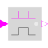
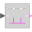

ChangingEdgeOutput y is true, if the input u has either a rising or a falling edge and otherwise it is false (y=change(u)) |

|
Information
This information is part of the Modelica Standard Library maintained by the Modelica Association.
A changing edge, i.e., either rising or falling, of the Boolean input u results in y = true at this time instant. At all other time instants, y = false.
The usage is demonstrated, e.g., in example Modelica.Blocks.Examples.BooleanNetwork1.
Parameters (1)
| pre_u_start |
Value: false Type: Boolean Description: Value of pre(u) at initial time |
|---|
Connectors (2)
| u |
Type: BooleanInput Description: Boolean input signal |
|
|---|---|---|
| y |
Type: BooleanOutput Description: Boolean output signal |
Used in Examples (1)
|
Modelica.Blocks.Examples Demonstrates the usage of blocks from Modelica.Blocks.MathBoolean |
Used in Components (1)
|  |
Modelica.Clocked.BooleanSignals.NonPeriodic Block to translate clock signals to continuous Boolean events (each time the input clock ticks a rising Boolean output edge is produced). |